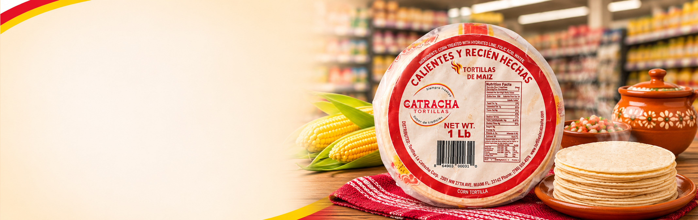
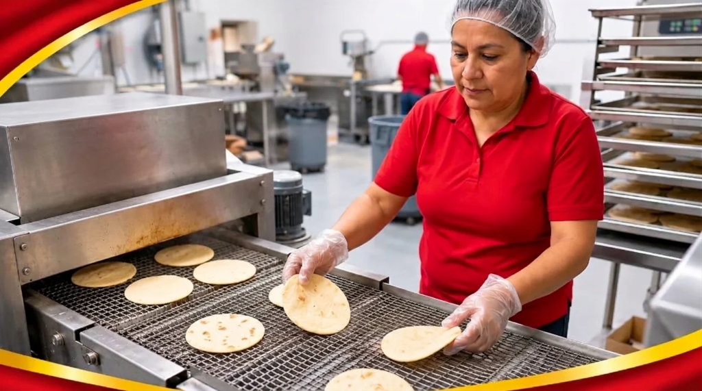
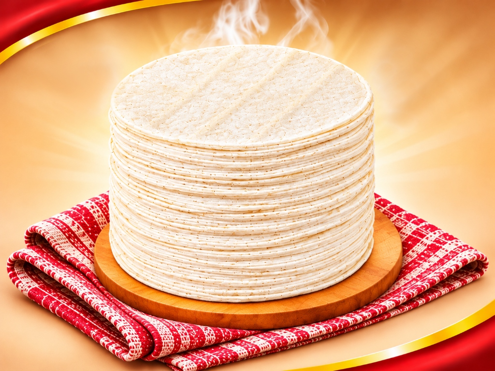
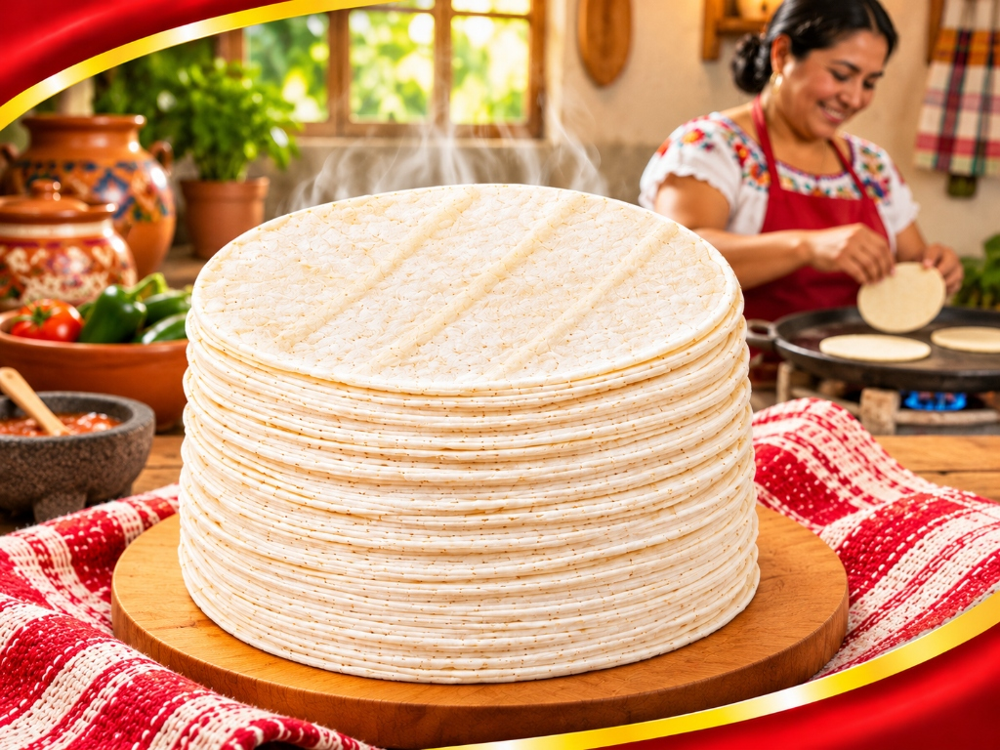
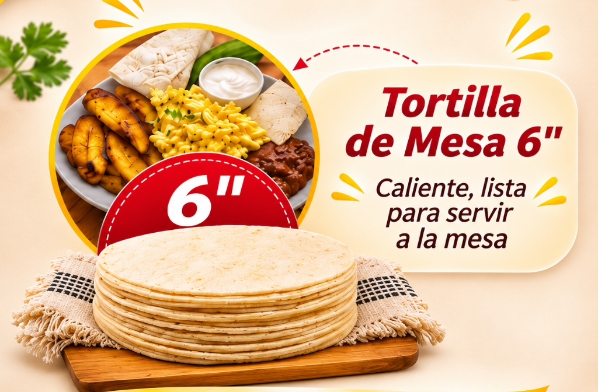

2501 NW 27TH AVE. MIAMI, FL. 33142
lacatrachatortillas@gmail.com
Crafted with 100% selected corn and our traditional recipe that brings the warmth and pride of our homeland straight to your table.

Our thermal packaging technology preserves the warmth and soft texture fresh off the griddle to share with your family.

The essential accompaniment for your baleadas, grilled meats, and traditional dishes with the authentic flavor of our homeland.

Designed for restaurants, supermarkets, and homes that demand unbeatable freshness, durability, and perfect flexibility.
Tortillas La Catracha offers your supermarket chain a high-turnover product that unites the authentic artisan flavor of our family recipes with the daily production capacity of a modern plant in Miami, Florida. We rigorously select the finest corn and operate stainless steel production lines under the strictest hygiene, sanitation, and regulatory compliance standards, guaranteeing a reliable, safe, and consistent supply. By stocking our tortillas on your shelves, you assure your customers an always-fresh, soft, superior-quality product that drives repeat purchases and strengthens your food department's profitability.

Tortillas La Catracha offers your supermarket a high-turnover product that integrates the authentic flavor of our family recipes with a comprehensive daily production and distribution operation across the entire Miami, Florida area. We craft our tortillas on stainless steel lines using carefully selected corn under strict state food hygiene and safety standards, and transport them directly in our own conditioned fleet to your display warmers. This intermediary-free supply chain guarantees your store punctual restocking, zero stockouts, and an always-fresh, soft, hot product that drives daily repeat purchases and maximizes your food department's profitability.
 Own Fleet in Miami
Own Fleet in Miami
Dedicated drivers covering scheduled daily routes across the entire Miami, Florida area.
Transport units adapted under strict Florida food handling regulations.
On-time arrival to stock display warmers and guarantee tortillas that are always fresh and hot.
The Catracho touch that accompanies your favorite meals and turns any moment into something special.

Crafted with care so they arrive soft, warm, and ready to share.

A recipe with Honduran roots, made to accompany the flavors you love most.
Made daily with original recipes and delivered fresh and hot in thermal warmers. Specialists in three exclusive sizes:

Hot, ready to serve at the table
The classic and indispensable tortilla for the everyday table. Crafted daily with 100% selected corn and kept in thermal warmers to guarantee maximum freshness and ideal serving temperature.

Made for delicious soft tacos
Designed with the ideal size and thickness for taquerias, food trucks, and taco lovers. Its elastic dough holds up to sauces, lime, and juicy meats without splitting or tearing.

Ideal for fried tacos
Extra-large, pliable format for easily rolling golden tacos and crispy flautas. Fries to a flawless golden color and an irresistible crunch without absorbing excess oil.
We guarantee that every package of tortillas preserves its temperature, aroma, and unbeatable softness until the moment of purchase at the supermarket.

Catracho inspiration to enjoy your La Catracha tortillas on every occasion.


2501 NW 27TH AVE. MIAMI, FL. 33142

.png)